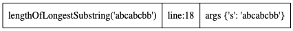
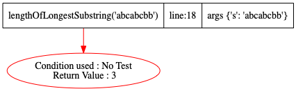

def lengthOfLongestSubstring(s):
start = 0 # watchvar start
maxLength = 0 # watchvar maxLength
usedChar = {} # watchvar usedChar
for i in range(len(s)):
if s[i] in usedChar and start <= usedChar[s[i]]:
start = usedChar[s[i]] + 1
else:
maxLength = max(maxLength, i - start + 1)
usedChar[s[i]] = i
return maxLength
def go():
# https://leetcode.com/problems/longest-substring-without-repeating-characters/
lengthOfLongestSubstring("abcabcbb")
Step:1,New function call at Line:18
Code executed: lengthOfLongestSubstring("abcabcbb")
Stack Trace generated

Step:2,Return seen at Line:14
Code executed: return maxLength
Stack Trace generated
